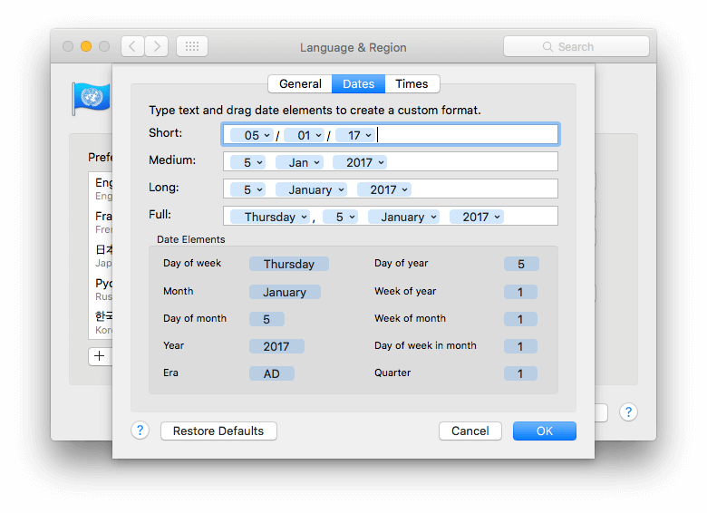
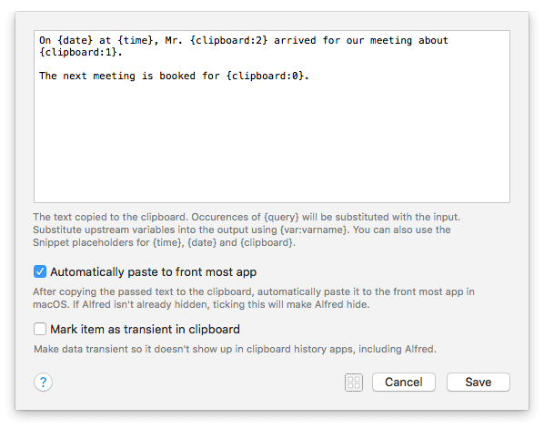

Dynamic Placeholders
Alfred offers dynamic placeholders, which allow you to insert dynamically-created content when using Snippets and in certain workflow objects.
What are Dynamic Placeholders?
Dynamic placeholders are shortcuts in curly brackets like {date:short}, which are replaced with content (e.g. the current date) when the workflow or snippet is triggered.
When creating a snippet or setting a workflow output, you may include some fixed, pre-defined text. In other instances, you may want to add the current time, the date in a week, or the contents of your clipboard; This is dynamic content, as it can change every time the snippet is pasted.
There are a few key types of content that can be pasted dynamically. Click on the relevant type below to find out more about how to use them, and their specific syntax.
- Date and Time Placeholders
- Clipboard Contents
- Random Placeholder
- Using Variables
- Transform Modifiers
- Cursor Position
- Snippets
Advanced Placeholders
Date and Time Placeholders
To use a dynamic date or time, begin with date, time, or datetime.
You can follow this with optional date arithmetic to calculate a date/time in the future or past, and optional default formats (short, medium, long, full). When no format is specified, Alfred uses the "medium" format from macOS as default.
For example, {date} will paste the current date in default format, while {date +7d +3h:long} will give me the date in seven days, three hours, in the long format.
The {date}, {time} and {datetime} placeholders use your macOS default formats. You can change these in your Mac's System Preferences > Language & Region > Advanced settings under Date and Time.

Example of basic date and time format
{date}for the today's date in medium format{date:short}for today's date in short version{time:full}for the current time in full{datetime:long}for today's date and time in long format
Date Arithmetic
Need to set a date or time at a future or past date? The following formatting allows you to add date and time processing.
Date arithmetic +/-
1Y: Year1M: Month (strict uppercase)1D: Day1h: Hour1m: Minute (strict lowercase)1s: Second
Add the date formatting after the date, time or datetime placeholder, for example, to show tomorrow's date, use:
{date +1D}
Or to show the time 3 hours and 20 minutes ago, use:
{time -3h -20m}
Date arithmetic works in combination with date formatting, allowing full control over the date and time placeholders.
Date examples, including arithmetic
- Time 10 minutes and 30 seconds ago in long format:
{time -10m -30s:long} - Date and time 2 years and two months ago in full format:
{datetime -2Y +2M:full} - Date and time 1 year ago, showing the date in two digit format:
{datetime -1Y:yy}
Advanced Date Formatting using Unicode formats
Alternatively, you can use the Unicode formats for dates to be more specific with your date formatting. These can also be used with arithmetic included before the colon symbol.
- ISO 8601 date format:
{date:yyyy-MM-dd'T'HH:mm:ssZZZZZ} - Day/Month/Year 7 days ago:
{date -7d:dd/MM/yy} - 12-hr clock with time zone:
{date:K:mm a, z} - The month only, in a month:
{date +1M:MMMM} - The day of the week:
{date:EEEE} - The month name and year:
{date:MMMM yyyy}
Clipboard contents
Use {clipboard} by itself to paste the content of your latest clipboard entry as plain text. You can also specify which clipboard item to use by using the clipboard offset, and perform some formatting (uppercase, lowercase and capitals).

Using clipboard offset to paste previous clipboard items
The clipboard offset allows you to specify which clipboard items you want Alfred to paste.
{clipboard} and {clipboard:0} represent the latest item in your clipboard; these may differ if your workflow manipulates the clipboard content.
For the next items in the clipboard list, use {clipboard:1}, {clipboard:2}, and so on.
Note: Clipboard History must be enabled on your Mac in order for
{clipboard:x}items to be available.
An example of clipboard offset usage
For example, if you copy these three text items to your clipboard:
First item copied: Andrew
Second: hedgehogs
Third: https://en.wikipedia.org/wiki/Hedgehog
And then create a snippet or workflow output as follows:
Hi {clipboard:2}, thanks for your question about {clipboard:1}. You can find your answer here: {clipboard:0}.
Resulting in:
Hi Andrew, thanks for your question about hedgehogs. You can find your answer here: https://en.wikipedia.org/wiki/Hedgehog
Random Placeholder
The {random} placeholder allows you to return a random number, word or UUID in the location of your placeholder.
{random:UUID}for a random uuid{random:1..5}for a random number between 1 and 5. These numbers can be omitted for min / max integer range{random:cheese,apple,biscuits}for a random word from the specified list of words
Variables
Variables can be used in workflows; For examples, you can hold on to an argument for later use by using an Argument and Variables Utility to save it as a variable like {var:filename}. You'll then be able to refer to it later in your workflow.
The built-in "Simple To-Do List" workflow example uses the Arg/Vars to save the task you want to add to your list, and uses it later to append to your to-do list.
Take a look at the Variables page for a more in-depth explanation of the uses for variables.
Transform Modifiers
Placeholder modifiers can be used with the clipboard and workflow variable placeholders, and allow you to quickly format the text.
The modifiers follow this format: {placeholder:variation.modifier}
uppercaselowercasecapitalsorcapitalcasetrim: Trim white spaces and new lines from the beginning and end of your stringreverse: Reverse the whole stringstripdiacritics: Remove accented charactersstripnonalphanumeric: Remove any non-alphanumeric characters such as punctuation or emoji
Transform modifiers syntax examples
{clipboard:3.reverse}: Reverse the third clipboard entry{var:result.uppercase}: Take the variable called "result" and uppercase it{clipboard:trim.stripdiacritics}: Transforms can also be stacked, so this example would trim the clipboard content and strip diacritics from the string
Cursor Position
Once you have your text content, you can tell Alfred where you'd like him to position the cursor once the content has been pasted.
Use {cursor} to set the position within your snippet.
Snippets
New in Alfred 4.1
You can insert the content of your snippets using the {snippet:} placeholder. Snippets are found and inserted by (resolved) keyword, so if your collection has a prefix of ! and your snippet has a keyword of sig, then use {snippet:!sig}. Note that Alfred's Snippets preferences shows resolved keywords in the keyword column of the snippets table.
If your current text content is rich text, and the snippet you are including is rich text, then the rich text of the snippet is retained.
Note that Alfred does not recursively embed snippets, so if the snippet you are including also contains a {snippet:} placeholder, then this secondary placeholder will not be resolved.
Order of operations for Replacement of Dynamic Placeholders
If you're using different types of placeholder replacement in your workflows, keep in mind the order of replacement for these placeholders:
- Variable replacements
- {query} replacement
- Snippet style dynamic placeholders replacements (date, time, datetime)
The top level workflow environment variables are treated as literal, but may be processed as they're encountered in processing the workflow.